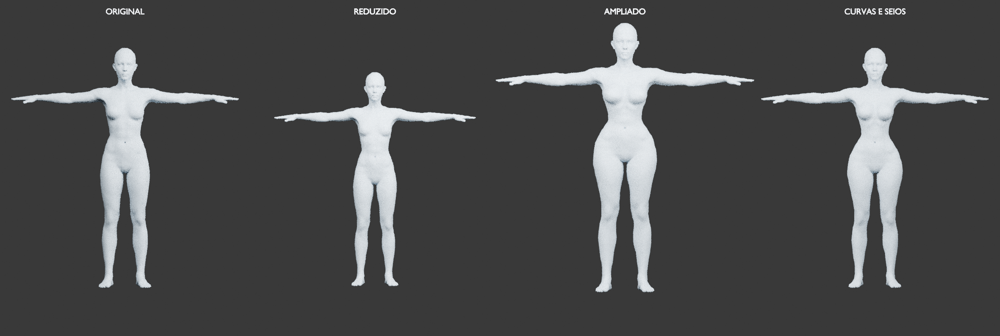

Proporções naturais: corpo e seios
Comparações do femele.glb original com combinações moderadas automaticamente. A proteção considera a forma do corpo e as articulações. Os controles mostram os valores efetivamente aplicados.

16 direções registradas por comparação. Clique na imagem para ampliar. Os recortes no tórax são apenas para visualizar a região; a malha exportada permanece inteira. A forma da base, suas assimetrias e seus defeitos preexistentes são preservados.
Método e limites da validação · Valores solicitados e aplicados · Auditoria em três poses